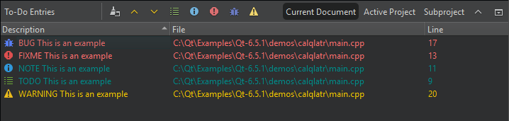

To-Do Entries
Note: Enable the Todo plugin to use it.
Lists the BUG, FIXME, NOTE, TODO, and WARNING keywords from the current file, from all project files, or from a subproject.
Click the icons on the toolbar to show only the selected keywords.

You can also open task list files generated by code scanning and analysis tools in Issues. For more information, see Show task list files in Issues.
To add keywords, go to Preferences > To-Do.
To exclude files from scanning for keywords, go to Projects > Project Settings > To-Do.
See also Enable and disable plugins, Exclude files from to-do lists, Show task list files in Issues, and To-Do.